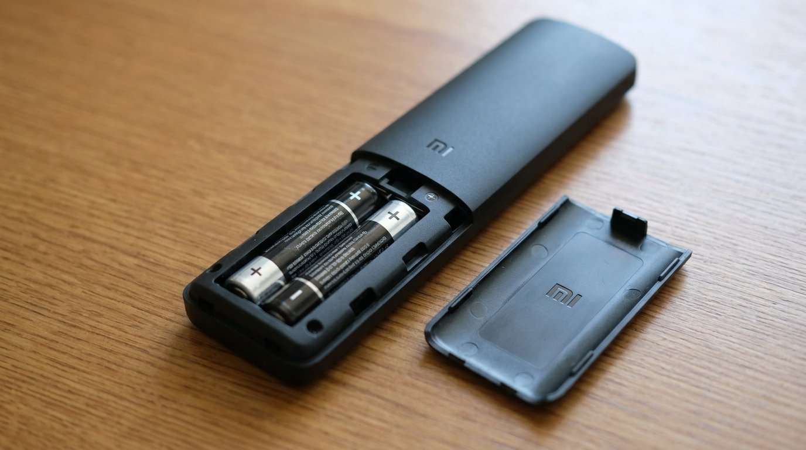
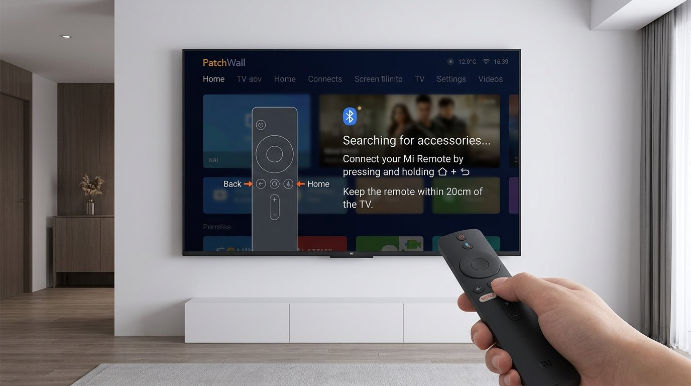
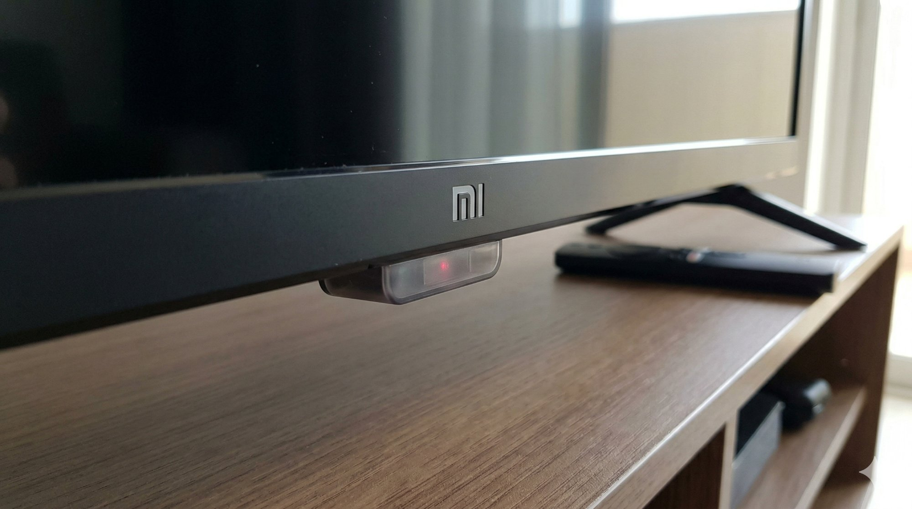
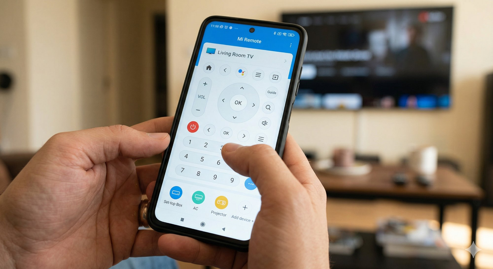

Mi TV Remote Not Working: What's Actually Going On and How to Fix It
You're trying to watch something and your Mi TV remote has completely stopped responding. Before you order a replacement or start hunting for the Mi TV app on your phone, try these fixes — most people are back to watching within 10 minutes.
What Is the Mi TV Remote Not Working Problem?
The Mi TV remote uses either Bluetooth or IR (infrared) to communicate with your Xiaomi smart TV, depending on the model. When it stops working, it usually means the connection between the remote and the TV has dropped, the batteries have given up, or something is blocking the signal.
It's not a TV fault — it's almost always the remote itself or the pairing. The good news is that this is almost always fixable at home without any tools and without calling a technician.
Why Does This Happen?
There are four main reasons a Mi TV remote stops responding:
- Dead or weak batteries. This is the number one reason, and it's the one most people dismiss too quickly. Mi TV remotes are surprisingly power-hungry because of the Bluetooth chip, and cheap batteries — the kind that come in those loose packs sold at every kirana store — can die without any warning. Your remote might technically have charge but not enough to maintain a Bluetooth connection.
- Bluetooth pairing has dropped. Mi TV remotes that use Bluetooth need to stay paired to the TV. A power fluctuation, a firmware update, or even just the TV being unplugged for a long period can break the pairing silently. The remote looks fine and the buttons feel normal, but it's not actually talking to the TV anymore.
- IR sensor blocked or dirty. On older Mi TV models that use infrared, the IR receiver on the TV can get coated with dust — especially during summer when ceiling fans run all day and stir up fine particles. If you're sitting at an angle or there's something between you and the TV, the signal won't reach the sensor. Monsoon humidity can also cause IR receivers to behave erratically on some units.
- Remote buttons stuck or internally damaged. If the remote was dropped, got wet, or had something spilled on it, the internal contacts can short or stick. A single stuck button can prevent the whole remote from sending any signal at all — the remote tries to send a held-down command on a loop and the TV ignores everything else.
How to Fix Mi TV Remote Not Working — Step by Step
Start at Step 1 and move down only if the previous step didn't solve it. The quickest fixes are at the top.
Before anything else, swap the batteries. This sounds obvious, but it's surprising how often a remote that "just worked yesterday" is being killed by batteries that have lost just enough charge to drop the Bluetooth connection.
- Open the battery compartment on the back of the remote — slide or press the tab at the bottom to remove the cover.
- Take out both AA batteries completely.
- Insert a fresh pair of branded alkaline AA batteries — Duracell, Eveready Gold, or any reputable brand. Don't use leftover batteries from another device, and avoid those unbranded batteries sold in strips at kirana stores.
- After inserting, press any button and check if the LED indicator on the remote (if it has one) flashes. A flash confirms the remote is powering up.
After putting in fresh batteries, don't stop here — move directly to Step 2 to re-pair. New batteries alone won't restore a dropped Bluetooth connection.

This step fixes the problem for most people — especially after a power cut or firmware update. Don't skip it even if you think the remote was paired before. Bluetooth pairing can drop silently and a re-pair is the quickest way to restore it.
- If the TV is off, turn it on using the physical power button on the TV body itself (usually on the bottom edge or back panel).
- Hold the remote about 20–30 cm from the TV — Bluetooth pairing needs close proximity.
- Press and hold the Home button and the Back button (the curved arrow) together for about 5 seconds.
- Your TV should display a pairing prompt on screen — "Searching for accessories" or "Connecting remote."
- Follow the on-screen instructions to complete pairing. The process usually completes in under 10 seconds.
- Once paired, test all buttons to confirm the remote is responding correctly.

If your Mi TV model uses an infrared remote (check your model number — older 4A and 4C series often use IR), a dusty or obstructed IR sensor is a very common culprit, especially in Indian homes during summer and monsoon.
- Look for the small dark sensor window at the bottom edge of the TV panel — it's a small translucent plastic window, often slightly recessed.
- Wipe it gently with a dry microfiber cloth to clear any dust or smudging. Don't use water or any liquid on the sensor.
- Make sure you're pointing the remote directly at the sensor from within 5 metres, with nothing in between — even a glass table or ornament can block IR.
- Tube lights and CFLs can interfere with IR signals — try dimming the room lights briefly to test whether the remote works better with reduced ambient light interference.
- Try the remote from directly in front of the TV at close range (1–2 metres) to rule out angle and distance as factors.

A single stuck button can silently prevent the entire remote from working. When a button is held down continuously, the remote tries to transmit that command in a loop — and the TV's input buffer ignores everything else while it processes the stuck command.
- Press every button on the remote one at a time and feel for any that seem sunken, sticky, or don't spring back cleanly.
- If you find a stuck button, try pressing it firmly a few times in quick succession to free it up mechanically.
- If the remote got wet at any point, remove the batteries immediately and leave it in a dry place near a fan for a few hours before testing — don't use a hairdryer or direct heat, as this can warp the button contacts.
- If a button is permanently stuck or depressed and won't release, the remote has a hardware fault and will need to be replaced.
While you work through the physical remote fixes, the Mi Remote app on your phone gives you full control of the TV. Importantly, it also tells you whether the TV itself is healthy — if the app works, the TV is responding fine and the problem is definitely the physical remote, not the TV.
- Download the Mi Remote app or the Mi TV app on your Android phone from the Play Store.
- Connect your phone to the same Wi-Fi network as your Mi TV.
- Open the app — it should automatically detect your Mi TV on the network.
- Select your TV and use the on-screen buttons to control it — all functions including volume, navigation, and Google Assistant work through the app.
- If the app controls the TV successfully, your TV is working perfectly and you can focus entirely on fixing the physical remote.

If you've replaced the batteries, re-paired, and nothing has worked, try a factory reset of the remote itself. This drains any residual charge and clears any firmware glitch the remote may have stored internally.
- Remove the batteries from the remote completely.
- Press and hold the Home button for 10 seconds with no batteries inside. This drains any residual capacitor charge that might be keeping a glitched state alive.
- Reinsert the fresh branded batteries.
- Re-pair the remote with your TV using the Home + Back method from Step 2 (hold both for 5 seconds, close to the TV).
- Wait 5 minutes after pairing before testing all buttons — some Mi TV remotes take a moment to fully re-register all key mappings after a reset.
When to Replace the Remote or Call Support
If you've gone through all six steps and the remote is still not responding, the internal circuit board has likely failed — especially if it was ever dropped or exposed to moisture. Here's what to do:
- Replace the remote: A genuine Xiaomi Mi TV replacement remote costs ₹400–800 on Flipkart or Amazon and you can replace it yourself — no technician needed. Search for your specific Mi TV model number to find the correct compatible remote.
- If the TV isn't responding even to the app or physical buttons: That's a different problem entirely. Contact Xiaomi support at 1800-103-6286 to book a service visit — the issue is with the TV itself, not the remote.
- Check warranty: If your Mi TV is within its warranty period, contact Xiaomi support before purchasing a replacement remote — faulty accessories may be covered.
Quick Summary
| Fix | Difficulty | Time Needed |
|---|---|---|
| Replace batteries with fresh branded AA cells | Very Easy | 2 minutes |
| Re-pair via Home + Back buttons (5 seconds) | Very Easy | 2 minutes |
| Clean the IR sensor on the TV bezel | Easy | 5 minutes |
| Check for stuck or water-damaged buttons | Easy | 3 minutes |
| Use Mi Remote app as temporary control | Very Easy | 5 minutes |
| Factory reset the remote (drain + re-pair) | Moderate | 10 minutes |
Mi TV remotes are generally reliable, but the Bluetooth pairing drop is something that catches a lot of people off guard because there's no obvious sign it's happened. Work through the battery swap and re-pairing steps first — that combination clears the problem 8 out of 10 times. If you do end up needing a new remote, genuine replacements are cheap and arrive in a couple of days, so you won't be stuck for long.